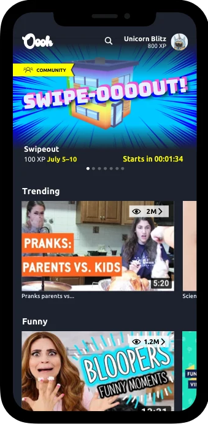
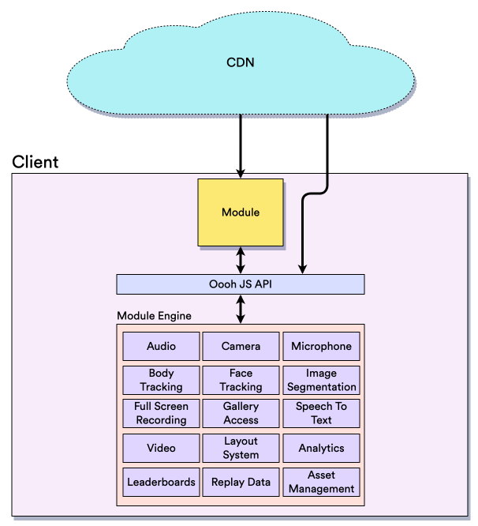
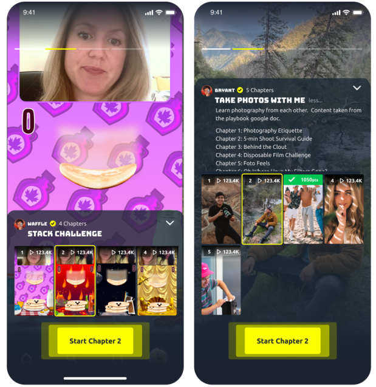
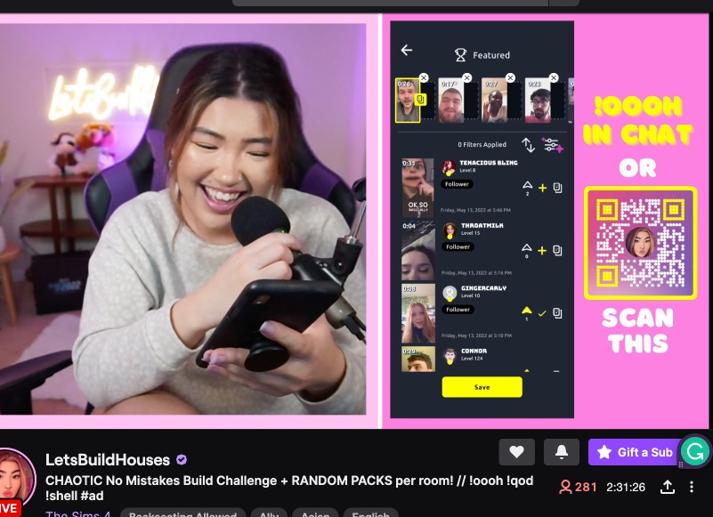
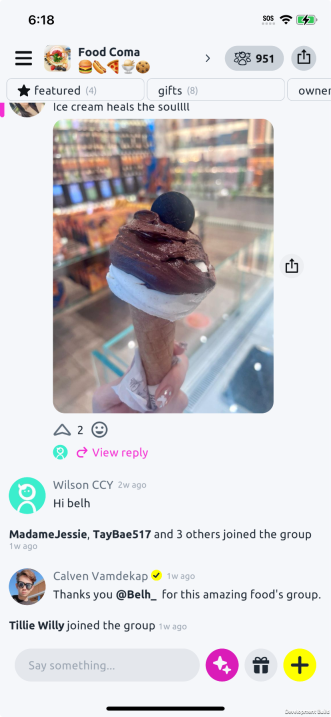

by Allan Bush VP of Engineering
Oooh was founded in 2019, its mission was to create a social platform that encouraged safe, positive engagement for its community of users.
Over the course of 5 and a half years, the product underwent many iterations and pivots. This document provides some history into the major pivots, app component highlights, and the architectural decisions to support the product goals at different stages.
This is a question that often comes up, as later iterations of Oooh are not the type of app traditionally created with Unity.
Going back to the beginning, Oooh was founded with a team of engineers who had most recently worked at Disney's Club Penguin on a mobile app created with Unity. Additionally, the first iteration of the app was about combining games and videos in one app.
With the goal of creating a single code base mobile app capable of running on iOS and Android, a cross-platform framework of some type was required. Given the internal expertise, need to create many small games, and the quick prototyping ability of Unity, it was chosen as the best option to base the app off of.
The goal of continuous integration for the mobile clients was:
Given the requirement to create iOS builds, a CI system running OSX was required. At the time, there were few cloud providers with this option. Additionally, we didn't have a dedicated dev ops / build engineer (and never did), so something with a simple setup and without the need for continuous maintenance was required.
Unity Cloud Build (now Unity Build Automation) was our chosen solution, and the following setup was created.
The first iteration of Oooh was a platform for videos and games targeting young children. With the primary focus being to encourage game play as additional interaction vs. the alternative of passively watching videos for too long.
Although we were able to create casual games internally relatively quickly, if Oooh was going to be a platform, we would need a way for third party developers to create their own games as well. Evaluating the options for runtime delivery of new games, we decided to support running HTML games inside our app.
Interactive content was known internally as a module, as the content was never limited to being a game. This was the start of what was known internally as the Module Engine, which allowed a module running either in Unity or in a webview to interact with the rest of the app.
The module engine controls the flow of handing off control from the app to the module and back. Enabling communication between C# code in the app and JavaScript in the module, allowing the content running within a webview inside an app to do many things which are normally limited to full apps.
Modules are versioned so that replays of the same oooh always run against the same version of the code, and third party developers don't need to worry about version incompatibilities in their data. They communicate with the app via the o3h.js library loaded at runtime.
The o3h.js library is written in typescript and compiled down to a broadly available target. The source is self documenting, generating the content of a ReadMe site. We ensure that the API exposed to modules never changes (only additions and deprecation are allowed), and that client communication is backwards and forwards compatible with all available client versions.
The client renders a custom webview and loads a module inside an iframe. Phone and app systems are exposed via communication through the API via the iframe.
Communication from C# to JavaScript mainly occurs via passing string data evaluated as function calls. Data is passed from JavaScript to C# via JSON strings which are parsed to execute a C# function.
An annotation is applied to any C# function that is eligible to be called from JavaScript. C# object instances are referenced via a unique id and ownership can be passed to JavaScript. Module context is generally short-lived, but when a C# object owned by JavaScript is garbage collected, it'll be destroyed in C# as well.
To eliminate the usage of reflection and memory allocation, information about annotated functions is pre-compiled at build time, and specialized JSON parsing is performed at runtime which doesn't allocate additional memory.
For passing large amounts of data from C# to JavaScript, such as image data, raw microphone input samples, etc... There's an alternative flow where raw bytes are passed from C# to native code where they are exposed to JavaScript via a resource path. As an example, when you connect an AudioNode or an AudioParam to a MicrophoneAudioNode internally it'll start polling a file at o3h://<objectId> for the microphone audio data.
Initially, we used a third party plugin to capture and render the camera in Unity. However, we found the available options limiting, so we created our own plugin for this.
Our plugin is session-based, allowing multiple consumers to make concurrent requests and share the same captured texture. It also supports dual camera on supporting devices, and controls the camera resolution.
Before iOS 15, Apple did not allow a webview within an app to access the camera. Working around that limitation and given that our platform was already playing videos, we added a way for modules to have the app render textures while the webview was running.
Modules are able to create a layout and specify where on the screen the attached texture source (camera / video player) is rendered. The texture can be rendered below the webview using Unity, in which case the module needs to render a transparent background to make it visible. Or the texture can be rendered natively above the webview, with the option to specify a mask allowing parts of the rectangular textures to be transparent.
Leaning into the capabilities of the module engine, Oooh started to target content creators. With the ability for them to create content using modules, having fans also create content based on their content, and finally letting creators react to the fan's content.
To facilitate the creation of creator videos and fan submissions, several video editing capabilities were added to the app. Including trimming, joining, auto highlighting, and composing.
Video operations are chained together as a serialized linear sequence of processing steps. This allows for the app to be terminated and lets the video editing continue in the next session.
Most operations are performed using FFMpeg, but some processing intensive operations are performed using the native functionality provided by iOS and Android. This gives a small performance improvement on iOS, but a huge improvement for Android where FFMpeg doesn't support hardware accelerated video editing.
There are many things within Oooh which have been called an oooh, but internally it's the published output of running a module. Publishing an oooh involves taking the result from running a module and uploading the assets / data. Modules output a main asset1 + an optional collection of other image/video/audio assets + replay data. All of these assets + data associated with how to rerun the module are uploaded together to create an oooh. An oooh is represented in the platform as a video with the option to join. When a user joins the oooh, the module is launched again with access to the assets it outputted previously. The output of that module run can again be uploaded to create a submission to the oooh.
The publishing pipeline is responsible for tracking all the information to upload, plus the video editing pipeline if the video output is edited before being uploaded. All publishing steps are serializable so that publishing can resume if the app restarts. Uploading of assets is performed via a custom native plugin that allows for uploading while the app is in the background.
1 Video at this point in time, eventually this could be only a sticker or nothing at all, and the video recorder would create an image or video to post.
The webview on iOS runs in a different process, which limits some options for controlling playback. Silent switch behaviour, audio routing, and volume control are some of the things we wanted manged by the app. To work around this, we allowed modules to play audio in Unity via the module API. However, porting existing content or getting third party developers to work with the specialized api was challenging. As such, a JavaScript polyfill was created and injected by the o3h.js API to replace the HTML5 audio spec.
Over the lifetime of Oooh there have been ~160 modules developed, with 84 of them making the cut and being released. The majority of these were created by third party game studios, with 10+ working for Oooh at times. To accommodate this level of module development, an SDK app was created.
The SDK was created from the same code base with an extra preprocessor directive and a custom scene. It presented a simplified app view that allowed you to launch a module directly, configure the inputs to the module, launch a module from an uri of your choosing, mock some of the app provided data, review raw module outputs, and attach the web console from your development machine to the embedded webview in the app.
When a user played a module to generate a submission, sometimes we would have both game music and a video recorded by the creator playing. While capturing microphone input audio, this would create issues with cleanly capturing the voice of the submitter. To combat this, a system was put into place to automatically reduce the output volume of the app when we detected someone talking. Afterwards, we could boost the ducked output in the final recording as the different audio sources where captured in different audio tracks.
A custom plugin was developed to control audio sessions and share access to microphone input data.
Machine learning models were used to perform body tracking, face tracking, and image segmentation in real time on either videos or a camera capture streams. This information was exposed via the o3h.js API to allow modules to use it in gameplay.
Face tracking and image segmentation used a third party SDK provided by Banuba with some local modifications to fix performance issues with the library.
Initially, body tracking used a custom tensorflow lite integration with the PoseNet model. This was later upgraded to use the NatML plugin with the BlazePose model. With the plan being to migrate off of Banuba using models with this plugin as well.
Using speech to text capabilities provided by the mobile operating systems (iOS and Android 13+) to convert microphone input into a stream of text.
The next pivot was to focus on creators who did livestreaming.
Allow real time capture of app frame data and audio across multiple renders. Using replaykit on iOS but on Android, data is captured across multiple views (native + Unity rendered) and composed into a single frame without any additional user permissions.
This can also temporarily inject another texture into the stream, to support private app moments, like selecting an image from your camera roll.
Do to the use of screen capture to record module gameplay, it wasn't possible to use existing tools to capture the Oooh app in streaming software such as OBS. As an alternative, we added the ability for the Oooh app to generate a srt or rtp stream internally and expose it to streaming software.
Additional benefits to this approach is that it allowed us to guide non-technical users with the setup process from within the app. It also added a layer of privacy in that OS notifications are not captured, and we were able to create sensitive areas within our own app where the live content is not streamed.
Video streaming is done using FFMpeg on both iOS and Android. With iOS an additional integration of the HaishinKit swift library was done as it provided lower latency than FFMpeg.
The final iteration of the Oooh app was to become a group chat experience, integrating modules as interactive chat elements to anchor a thread.
Unity provides a text input field, and there's a number of text input plugins, but none of them fully match the text input experience of using a native app. Now that our app centered around chatting, these flaws became very visible.
Our text input plugin works by rendering a native text input field above Unity when the text input is focused. This ensures the look and feel are 100% native regardless of your OS version.
This currently requires rendering the entire width of the screen where the text input field is located. To meet design requirements, some additional supported functionality is: rendering buttons beside the input field, rendering buttons inside the input field, animated collapse / expansion of button lists in the input field, and making the input field height grow / shrink based on input size.
A modern photo picker plugin for Unity allowing for image / video selection without asking for user permissions.
This is a series of suggestions available to group owners to make it easier for them to post content to their group.
Extensions are a container for untyped data that can be remotely updated and reflected in the app in realtime. Most entities (chat message, group, thread, user) in Oooh can have one or more extensions attached to them. Extensions can be published using the publishing pipeline and include multimedia assets.
The goal being third party developers can write AWS lambda functions that are triggered by client actions or server events. These functions would create / modify extension data, and clients would reflect the changes in realtime. This expands on the capabilities of modules, allowing the rendered outputs to be updated without a user reopening a module.
The full extension system was scheduled to launch with the next client release before Oooh shutdown. The first example was a poll extension. The flow being that one client would create a poll, this would call an AWS lambda function, which would create a comment and attach a poll extension containing the poll options. All clients in the group would render the comment with the poll extension to reflect that it's a poll. When another client votes on the poll, another AWS lambda function is called which updates the vote counts on the poll extension data. Finally, to complete the loop, all clients would update to show the new vote counts on the poll.
Another example is the AI Summary feature was updated to use extensions. Mostly using server events (i.e.: someone joins the group, or a message is posted to the group), the same data set can be managed server side and stored in extension data. This allows group co-owners to share the summary data, and allows some of the computational heavy requests (i.e.: suggesting links / ooohs) to be preformed before the group owner loads into the group.
This history isn't strictly linear, and some developments don't fit in the narrative. Here are some other notable components used in the Oooh app.
To dynamically load image data and render it in Unity, you need to use the LoadImage function. This has performance issues in that it both decodes the image and populates the texture on the main thread. With a large image or several small images, frame drops are very noticeable.
To resolve this, we developed our own decoding pipeline that runs asynchronously off the main thread. Using the image decoding capabilities of the underlining OS, plus libraries for some image formats with older Android versions.
This allows us to support many more image formats, including animated formats. Animated formats can either show a static frame or show their animation.
To support OS settings for different text sizes, we developed a system to dynamically adjust the reference resolution on UI Canvas Scaler components. Generally, this "just works" as long as the anchor positions are set properly on all UI Rect Transforms, and it's a great way to catch issues you'd see across different resolution devices anyway.
To support OS light vs. dark mode, we reduced the colours used in our app to a fixed set of named colours. Light and dark schemas were created mapping each colour name to a colour. Finally, a component that configured the named colour to use was attached alongside every Graphic component.
The component subscribed to changes in the active mode and updated the colour of the graphic. Additionally, editor tools were built to allow the different modes to be tested in the scene view.
Navigation of the Oooh app is a series of view changes, each view is a prefab with a state data object. The application view stack controls how many view prefabs are loaded on top of each other and will destroy the prefabs to save memory, restoring them via their state data object when needed.
Oooh has a number of components which don't have direct product impact, but which make development easier for developers. Here are some of the notable components.
A simple wrapper for Unity's debug logger that adds functionality.
Makes the task of hooking up data to display elements generic. Separating the data source from the elements being rendered. This allows for common UI elements to be added or modified in a prefab without code changes.
Adding an annotation to a class property plus injection of a binder can automatically change the value of the property based on an override setup in firebase remote configuration. This can also be used to A/B test different values, as configured remotely.
Network code is generated from webservice endpoints using OpenAPI. GraphQL schema is generated using the graphql-codegen/c-sharp npm package.
Network requests are given a reactive priority, and low priority requests are queued (or all requests if there's too many concurrent requests) and executed when network traffic is minimal.
It's better to make one network request for X items instead of X requests for one item. For places where it's difficult to pre-determine which X items to request, we have a request batching system. The batching system will consolidate all network requests of the same type within a frame and send a single request at the end of the frame.
To ensure there are no issues with prefabs in our project, we have an asset validation pass that runs as a unit test. The validation pass checks every property of every component of every prefab and scene in our project. As the object iteration is relatively slow (~1.5 seconds for our project), this is a pluggable framework allowing for different validation rules. Current validation checks are: no missing components, Graphic components are UI Styled, the Button component isn't used (we have a custom one), certain enum and string references are valid, object references between components are valid, and Unity event function targets are valid.
Editor tool to see which components in the scene / prefab reference a given component.
There are many, many other components in our app: emoji support, video recording, realtime chat, contacts, FTUE, notification, debug menus, analytics, sharing, deep linking, caching, etc... But I'm limiting the list here to the ones which I feel are unique / reusable / interesting.
As much as I'd like to claim, I built all of this myself, it couldn't have been done without an exceptional engineering team.
I'd also like to call out Derek Hilder, my counterpoint on server development, who's put together an excellent reference of the Oooh backend architecture.